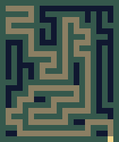
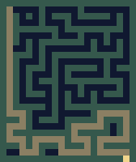

CASE · MAZE
Reworking the maze generator迷宫算法重做
How a "this feels too easy" note from playing on my phone turned into a measured problem, a browser test bench, parameters I tuned by hand, and a Swift port that matches the test bench cell for cell.
一句「玩起来太简单」的真机感受，是怎么变成可量化的问题、一个网页试验台、我亲手调定的参数，以及和试验台逐格一致的 Swift 实现的。
The problem问题
Playing on my phone, every maze felt like one long corridor with short stubs. I could usually see the route at a glance, and side branches ended after a few steps.
真机上玩，每张迷宫都像一条长走廊加几截短岔路，经常一眼就能看出路线，岔路走几步就到头。
Measure it first先量化
Before changing anything I asked for numbers, so we would know whether the problem was real and how big it was. The old generator was a depth-first search with backtracking. We measured two things: how many junctions sit on the solution, and how much extra walking a player needs if they simply always head toward the exit (bottom right) and backtrack only when blocked.
动手之前我先要数据，确认问题是真的、有多严重。旧算法是带回溯的深度优先。我们量了两件事：正确路线上有几个岔口；以及一个「永远朝出口（右下角）走、碰壁才回头」的玩家，要比最短路多走多少。
| Old algorithm, average of 50 batches旧算法，50 批平均 | Level 1第 1 关 | Level 13第 13 关 | Level 28第 28 关 |
|---|---|---|---|
| Junctions on the solution路线上的岔口 | 2.4 | 5 | 7.3 |
| Walking needed if you always head for the exit一直朝出口走要走的步数 | ×1.02 | ×1.05 | ×1.09 |
A ratio close to ×1 means "just walk toward the exit" is almost the shortest path. That matched how it felt.
接近 ×1 的意思是「一直朝出口走」几乎就是最短路，和玩起来的感觉一致。
Set the goal定目标
- Every maze must still be solvable.
- 必须有解。
- Loops are allowed. A "perfect" maze (exactly one route) was never a requirement for a bedtime game.
- 允许环路。睡前小游戏不需要「每两点之间只有一条路」的完美迷宫。
- "Always head for the exit" should stop working.
- 让「一直朝出口走」这招失效。
Build a test bench before touching Swift先做网页试验台，不直接改 Swift
Tuning a generator inside the app means a rebuild for every change and one maze on screen at a time. A single HTML page shows twelve levels side by side, regenerates in a fraction of a second, and lets me play each maze. The app was left alone until the parameters were settled.
在 App 里调生成算法，每改一次都要重新构建，屏幕上一次只看得到一张。一个 HTML 页面能并排放 12 关、零点几秒重新生成，每张都能直接玩。参数定下来之前，App 一行不动。
The new generator: a growing-tree maze (each candidate picks a random chance of continuing from the newest cell, which controls corridor length versus branching), then a share of dead ends is opened into loops, then each maze gets a difficulty score (penalizing "walk straight to the exit", rewarding deep dead ends and detours away from the exit). Each level generates several dozen candidates and keeps the best. The random seed is derived from the batch number and the level, so the same level always produces the same maze.
新算法：先用生长树生成（每张候选随机取一个「从最新的格子继续挖」的概率，决定走廊长短和分叉多少），再按比例把一部分死胡同打通成环，然后给每张图打难度分（罚「朝出口直走」，奖励深岔路和背着出口走的绕路）。每关生成几十张候选，留分最高的一张。随机种子由批次和关号派生，同一关永远是同一张图。
I tuned the parameters我来调参
I played through the levels on the test bench and moved the sliders until the early levels were still relaxing and the later ones needed real exploring. The settled values:
我在试验台上一关关玩，拖滑块，直到前几关依然轻松、后面的关需要真的去探索。定下来的参数：
candidates=61 branching=0.50 loops=14% straight-penalty=2.5 deep-branches=1.2 detour=1.5
| New algorithm, average of 50 batches新算法，50 批平均 | Level 1第 1 关 | Level 13第 13 关 | Level 28第 28 关 |
|---|---|---|---|
| Junctions on the solution路线上的岔口 | 5.4 | 8.9 | 12.5 |
| Walking needed if you always head for the exit一直朝出口走要走的步数 | ×3.56 | ×5.13 | ×6.02 |
| Loops环路 | 0.6 | 1.3 | 2 |


Port it and prove it matches移植，并证明一致
The JavaScript was ported to Swift function by function, including the small seeded random number generator (mulberry32), so both produce identical numbers. All tuning values live in one file. A golden test generates five levels in Swift and compares them cell by cell with mazes exported from the test bench. The maze shown on the home screen cartridge is pinned separately so the cover art doesn't change with the algorithm.
JS 逐个函数移植到 Swift，连带种子随机数生成器（mulberry32）一起移植，两边出的随机数完全相同。所有调参数值集中在一个文件里。对照测试用 Swift 生成 5 关，与试验台导出的迷宫逐格比较。首页卡带上展示的那张迷宫单独固定，不随算法变。
Check three points on the device真机上看三个点
Maze sizes grow every three levels and stop growing at level 28, so difficulty is a curve, not a single setting. Level 1 only tells you where the curve starts. I checked level 1, level 13 and level 28 on the phone: the start, the middle, and the cap. This became a project rule for every procedurally generated difficulty curve.
迷宫尺寸每 3 关长一圈，第 28 关封顶，难度是一条曲线，不是一个值。第 1 关只能告诉你曲线从哪开始。我在真机上看了第 1、13、28 关：起点、中段、上限。这条后来成了项目规矩：程序化难度曲线至少采样三个区间验收。
Division of work: I noticed the problem, asked for the measurement, set the goals, and tuned the parameters. The AI wrote the analysis code, the test bench, the Swift port and the tests.
分工：问题是我发现的，要不要先量化、目标定成什么、参数取多少是我定的；分析代码、试验台、Swift 移植和测试由 AI 写。